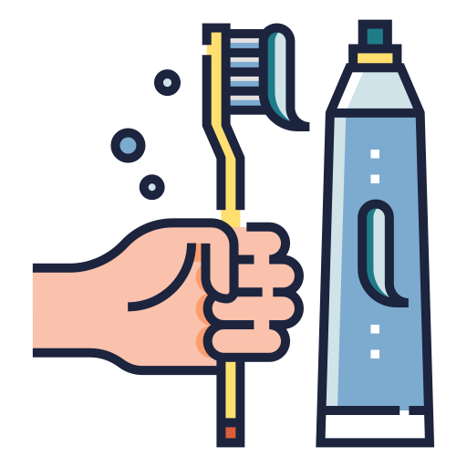

COMO ESCOVAR OS DENTES
Você vai precisar:
- ➜ Uma escova de dente.
- ➜ Um creme dental.
- ➜ Fio dental
- ➜ Água.
- ∟ Pegue a escova de dente.
- ∟ Pegue o creme dental.
- ∟ Coloque o creme dental na parte que tem os fiapos da escova de dente.
- ∟ Abra a boca.
- ∟ Leve a escova de dente e o creme dental até a sua boca.
- ∟ Faça movimentos na vertical e horizontal escovando todos os dentes.
- ∟ Cuspa e repita o passo acima.
- ∟ Agora escove a lingua.
- ∟ Cuspa novamente.
- ∟ Leve a água até a sua boca para retirar os residos do creme dental.
- ∟ Cuspa novamente.
- ∟ Pegue o fio dental.
- ∟ Agora tire um pedaço do fio dental que considere suficiente para passar entre os dentes.
- ∟ Passe o fio entre todos os dentes que conseguir.
- ∟ Descarte o pedaço de fio dental que foi usado.
- ∟ Pronto, agora seus dentes estão limpinhos.